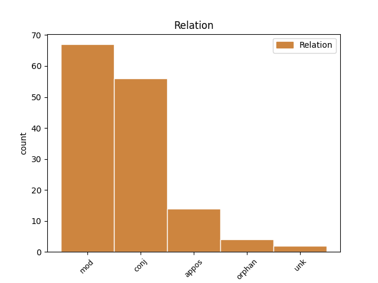
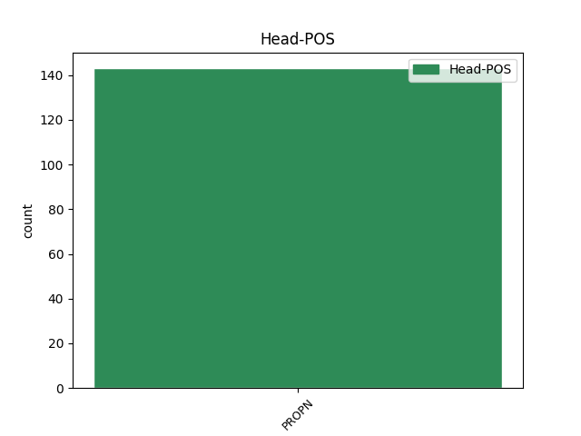
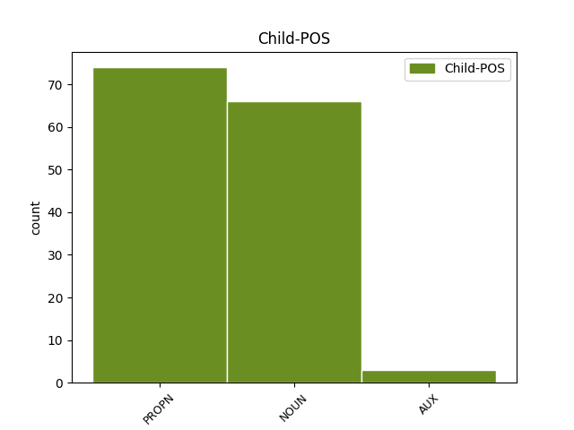

Distribution of features within this leaf



Agreement Rules sorted by frequency.
- When the dependent token is the modifer(mod) of the head token, and the head token is PROPN and the dependent token is NOUN.
1 Klika _ _ _ _ 0 _ _ _
2 u _ _ _ _ 0 _ _ _
3 dveří _ _ _ _ 0 _ _ _
4 však _ _ _ _ 0 _ _ _
5 cvakla _ _ _ _ 0 _ _ _
6 a _ _ _ _ 0 _ _ _
7 moje _ _ _ _ 0 _ _ _
8 bývalá _ _ _ _ 0 _ _ _
9 spolužačka spolužačka NOUN NNFS1-----A---- Case=Nom|Gender=Fem|Number=Sing|Polarity=Pos 12 mod _ _
10 a _ _ _ _ 0 _ _ _
11 přítelkyně _ _ _ _ 0 _ _ _
12 Renáta Renáta PROPN NNFS1-----A---- Case=Nom|Gender=Fem|NameType=Giv|Number=Sing|Polarity=Pos 0 _ _ _
13 se _ _ _ _ 0 _ _ _
14 objevila _ _ _ _ 0 _ _ _
15 se _ _ _ _ 0 _ _ _
16 širokým _ _ _ _ 0 _ _ _
17 úsměvem _ _ _ _ 0 _ _ _
18 na _ _ _ _ 0 _ _ _
19 tváři _ _ _ _ 0 _ _ _
20 ve _ _ _ _ 0 _ _ _
21 světnici _ _ _ _ 0 _ _ _
22 . _ _ _ _ 0 _ _ _
1 Paní _ _ _ _ 0 _ _ _
2 A A PROPN NNFS1-----A---8 Abbr=Yes|Case=Nom|Gender=Fem|Number=Sing|Polarity=Pos 4 mod _ SpaceAfter=No
3 . _ _ _ _ 0 _ _ _
4 C C PROPN NNFS1-----A---8 Abbr=Yes|Case=Nom|Gender=Fem|Number=Sing|Polarity=Pos 0 _ _ _
5 . _ _ _ _ 0 _ _ _
6 se _ _ _ _ 0 _ _ _
7 zastavila _ _ _ _ 0 _ _ _
8 a _ _ _ _ 0 _ _ _
9 pozvedla _ _ _ _ 0 _ _ _
10 hlavu _ _ _ _ 0 _ _ _
11 k _ _ _ _ 0 _ _ _
12 rozkvetlé _ _ _ _ 0 _ _ _
13 koruně _ _ _ _ 0 _ _ _
14 . _ _ _ _ 0 _ _ _
1 Kořeny _ _ _ _ 0 _ _ _
2 těchto _ _ _ _ 0 _ _ _
3 příběhů _ _ _ _ 0 _ _ _
4 sahají _ _ _ _ 0 _ _ _
5 až _ _ _ _ 0 _ _ _
6 k _ _ _ _ 0 _ _ _
7 předbudhistickým _ _ _ _ 0 _ _ _
8 časům _ _ _ _ 0 _ _ _
9 Indie Indie PROPN NNFS2-----A---- Case=Gen|Gender=Fem|NameType=Geo|Number=Sing|Polarity=Pos 0 _ _ _
10 , _ _ _ _ 0 _ _ _
11 starověké _ _ _ _ 0 _ _ _
12 Číny Čína PROPN NNFS2-----A---- Case=Gen|Gender=Fem|NameType=Geo|Number=Sing|Polarity=Pos 9 conj _ SpaceAfter=No
13 , _ _ _ _ 0 _ _ _
14 Japonska _ _ _ _ 0 _ _ _
15 a _ _ _ _ 0 _ _ _
16 k _ _ _ _ 0 _ _ _
17 zemím _ _ _ _ 0 _ _ _
18 raného _ _ _ _ 0 _ _ _
19 islámu _ _ _ _ 0 _ _ _
20 a _ _ _ _ 0 _ _ _
21 židovství _ _ _ _ 0 _ _ _
22 . _ _ _ _ 0 _ _ _
1 Máša Máša PROPN NNFS1-----A---- Case=Nom|Gender=Fem|NameType=Giv|Number=Sing|Polarity=Pos 0 _ _ _
2 a _ _ _ _ 0 _ _ _
3 Veronika _ _ _ _ 0 _ _ _
4 , _ _ _ _ 0 _ _ _
5 jediné _ _ _ _ 0 _ _ _
6 dvě _ _ _ _ 0 _ _ _
7 bytosti bytost NOUN NNFP1-----A---- Case=Nom|Gender=Fem|Number=Plur|Polarity=Pos 1 appos _ SpaceAfter=No
8 , _ _ _ _ 0 _ _ _
9 které _ _ _ _ 0 _ _ _
10 by _ _ _ _ 0 _ _ _
11 nerad _ _ _ _ 0 _ _ _
12 opustil _ _ _ _ 0 _ _ _
13 . _ _ _ _ 0 _ _ _
1 Dům _ _ _ _ 0 _ _ _
2 s _ _ _ _ 0 _ _ _
3 otlučenou _ _ _ _ 0 _ _ _
4 fasádou _ _ _ _ 0 _ _ _
5 , _ _ _ _ 0 _ _ _
6 secesními _ _ _ _ 0 _ _ _
7 balkóny _ _ _ _ 0 _ _ _
8 a _ _ _ _ 0 _ _ _
9 terasou _ _ _ _ 0 _ _ _
10 v _ _ _ _ 0 _ _ _
11 posledním _ _ _ _ 0 _ _ _
12 patře _ _ _ _ 0 _ _ _
13 s _ _ _ _ 0 _ _ _
14 pohledem _ _ _ _ 0 _ _ _
15 na _ _ _ _ 0 _ _ _
16 Hradčany Hradčany PROPN NNFP4-----A---- Case=Acc|Gender=Fem|NameType=Geo|Number=Plur|Polarity=Pos 0 _ _ _
17 a _ _ _ _ 0 _ _ _
18 petřínské _ _ _ _ 0 _ _ _
19 stráně stráň NOUN NNFP4-----A---- Case=Acc|Gender=Fem|Number=Plur|Polarity=Pos 16 conj _ SpaceAfter=No
20 . _ _ _ _ 0 _ _ _
1 Roberta _ _ _ _ 0 _ _ _
2 Bentona _ _ _ _ 0 _ _ _
3 , _ _ _ _ 0 _ _ _
4 Rolanda Roland PROPN NNMS4-----A---- Animacy=Anim|Case=Acc|Gender=Masc|NameType=Giv|Number=Sing|Polarity=Pos 0 _ _ _
5 Jaffea _ _ _ _ 0 _ _ _
6 a _ _ _ _ 0 _ _ _
7 Woodyho Woody PROPN NNMS4-----A---- Animacy=Anim|Case=Acc|Gender=Masc|NameType=Giv|Number=Sing|Polarity=Pos 4 orphan _ _
8 Allena _ _ _ _ 0 _ _ _
9 , _ _ _ _ 0 _ _ _
10 a _ _ _ _ 0 _ _ _
11 navíc _ _ _ _ 0 _ _ _
12 , _ _ _ _ 0 _ _ _
13 jako _ _ _ _ 0 _ _ _
14 by _ _ _ _ 0 _ _ _
15 to _ _ _ _ 0 _ _ _
16 nestačilo _ _ _ _ 0 _ _ _
17 , _ _ _ _ 0 _ _ _
18 jednu _ _ _ _ 0 _ _ _
19 skutečnou _ _ _ _ 0 _ _ _
20 legendu _ _ _ _ 0 _ _ _
21 filmového _ _ _ _ 0 _ _ _
22 umění _ _ _ _ 0 _ _ _
23 . _ _ _ _ 0 _ _ _
1 Pokaždé _ _ _ _ 0 _ _ _
2 , _ _ _ _ 0 _ _ _
3 když _ _ _ _ 0 _ _ _
4 otáčela _ _ _ _ 0 _ _ _
5 stránku _ _ _ _ 0 _ _ _
6 , _ _ _ _ 0 _ _ _
7 podívala _ _ _ _ 0 _ _ _
8 se _ _ _ _ 0 _ _ _
9 na _ _ _ _ 0 _ _ _
10 Arona Aron PROPN NNMS4-----A---- Animacy=Anim|Case=Acc|Gender=Masc|NameType=Giv|Number=Sing|Polarity=Pos 0 _ _ _
11 , _ _ _ _ 0 _ _ _
12 který _ _ _ _ 0 _ _ _
13 byl být AUX VpMS----R-AA--- Animacy=Anim|Gender=Masc|Number=Sing|Polarity=Pos|Tense=Past|VerbForm=Part|Voice=Act 10 mod _ _
14 při _ _ _ _ 0 _ _ _
15 okraji _ _ _ _ 0 _ _ _
16 vody _ _ _ _ 0 _ _ _
17 zabrán _ _ _ _ 0 _ _ _
18 do _ _ _ _ 0 _ _ _
19 hry _ _ _ _ 0 _ _ _
20 . _ _ _ _ 0 _ _ _
1 Veronika Veronika PROPN NNFS1-----A---- Case=Nom|Gender=Fem|NameType=Giv|Number=Sing|Polarity=Pos 0 _ _ _
2 jediná _ _ _ _ 0 _ _ _
3 bytost bytost NOUN NNFS1-----A---- Case=Nom|Gender=Fem|Number=Sing|Polarity=Pos 1 unk _ _
4 na _ _ _ _ 0 _ _ _
5 světě _ _ _ _ 0 _ _ _
6 , _ _ _ _ 0 _ _ _
7 která _ _ _ _ 0 _ _ _
8 si _ _ _ _ 0 _ _ _
9 ho _ _ _ _ 0 _ _ _
10 váží _ _ _ _ 0 _ _ _
11 a _ _ _ _ 0 _ _ _
12 uznává _ _ _ _ 0 _ _ _
13 ho _ _ _ _ 0 _ _ _
14 . _ _ _ _ 0 _ _ _
1 Láďa _ _ _ _ 0 _ _ _
2 dostal _ _ _ _ 0 _ _ _
3 kapesní _ _ _ _ 0 _ _ _
4 nůž _ _ _ _ 0 _ _ _
5 a _ _ _ _ 0 _ _ _
6 Veronika Veronika PROPN NNFS1-----A---- Case=Nom|Gender=Fem|NameType=Giv|Number=Sing|Polarity=Pos 0 _ _ _
7 novou _ _ _ _ 0 _ _ _
8 panenku panenka NOUN NNFS4-----A---- Case=Acc|Gender=Fem|Number=Sing|Polarity=Pos 6 orphan _ SpaceAfter=No
9 . _ _ _ _ 0 _ _ _
Disagree Examples:
1 Děti _ _ _ _ 0 _ _ _
2 si _ _ _ _ 0 _ _ _
3 hrály _ _ _ _ 0 _ _ _
4 na _ _ _ _ 0 _ _ _
5 pískovišti _ _ _ _ 0 _ _ _
6 , _ _ _ _ 0 _ _ _
7 děti _ _ _ _ 0 _ _ _
8 z _ _ _ _ 0 _ _ _
9 domů _ _ _ _ 0 _ _ _
10 na _ _ _ _ 0 _ _ _
11 jednom _ _ _ _ 0 _ _ _
12 velikém _ _ _ _ 0 _ _ _
13 sídlišti _ _ _ _ 0 _ _ _
14 , _ _ _ _ 0 _ _ _
15 a _ _ _ _ 0 _ _ _
16 hrával _ _ _ _ 0 _ _ _
17 si _ _ _ _ 0 _ _ _
18 s _ _ _ _ 0 _ _ _
19 nimi _ _ _ _ 0 _ _ _
20 také _ _ _ _ 0 _ _ _
21 malý _ _ _ _ 0 _ _ _
22 černý _ _ _ _ 0 _ _ _
23 chlapeček _ _ _ _ 0 _ _ _
24 , _ _ _ _ 0 _ _ _
25 syn _ _ _ _ 0 _ _ _
26 z _ _ _ _ 0 _ _ _
27 manželství _ _ _ _ 0 _ _ _
28 Češky Češka PROPN NNFS2-----A---- Case=Gen|Gender=Fem|NameType=Nat|Number=Sing|Polarity=Pos 0 _ _ _
29 a _ _ _ _ 0 _ _ _
30 Nigerijce Nigerijec PROPN NNMS2-----A---- Animacy=Anim|Case=Gen|Gender=Masc|NameType=Nat|Number=Sing|Polarity=Pos 28 conj _ SpaceAfter=No
31 , _ _ _ _ 0 _ _ _
32 hrával _ _ _ _ 0 _ _ _
33 si _ _ _ _ 0 _ _ _
34 s _ _ _ _ 0 _ _ _
35 nimi _ _ _ _ 0 _ _ _
36 i _ _ _ _ 0 _ _ _
37 malý _ _ _ _ 0 _ _ _
38 cikánek _ _ _ _ 0 _ _ _
39 , _ _ _ _ 0 _ _ _
40 drobounký _ _ _ _ 0 _ _ _
41 chlapeček _ _ _ _ 0 _ _ _
42 s _ _ _ _ 0 _ _ _
43 krásnýma _ _ _ _ 0 _ _ _
44 a _ _ _ _ 0 _ _ _
45 stále _ _ _ _ 0 _ _ _
46 trochu _ _ _ _ 0 _ _ _
47 vystrašenýma _ _ _ _ 0 _ _ _
48 očima _ _ _ _ 0 _ _ _
49 . _ _ _ _ 0 _ _ _
1 Seděli _ _ _ _ 0 _ _ _
2 tu _ _ _ _ 0 _ _ _
3 tehdy _ _ _ _ 0 _ _ _
4 vedle _ _ _ _ 0 _ _ _
5 mě _ _ _ _ 0 _ _ _
6 mí _ _ _ _ 0 _ _ _
7 dva _ _ _ _ 0 _ _ _
8 synové _ _ _ _ 0 _ _ _
9 , _ _ _ _ 0 _ _ _
10 dvojčata dvojče NOUN NNNP1-----A---- Case=Nom|Gender=Neut|Number=Plur|Polarity=Pos 11 mod _ _
11 Petr Petr PROPN NNMS1-----A---- Animacy=Anim|Case=Nom|Gender=Masc|NameType=Giv|Number=Sing|Polarity=Pos 0 _ _ _
12 a _ _ _ _ 0 _ _ _
13 Matěj _ _ _ _ 0 _ _ _
14 , _ _ _ _ 0 _ _ _
15 kteří _ _ _ _ 0 _ _ _
16 zrovna _ _ _ _ 0 _ _ _
17 přiletěli _ _ _ _ 0 _ _ _
18 z _ _ _ _ 0 _ _ _
19 Prahy _ _ _ _ 0 _ _ _
20 a _ _ _ _ 0 _ _ _
21 skoro _ _ _ _ 0 _ _ _
22 celou _ _ _ _ 0 _ _ _
23 tu _ _ _ _ 0 _ _ _
24 událost _ _ _ _ 0 _ _ _
25 prospali _ _ _ _ 0 _ _ _
26 . _ _ _ _ 0 _ _ _
1 Prošel _ _ _ _ 0 _ _ _
2 Terezínem Terezín PROPN NNIS7-----A---- Animacy=Inan|Case=Ins|Gender=Masc|Number=Sing|Polarity=Pos 0 _ _ _
3 , _ _ _ _ 0 _ _ _
4 Osvětimí Osvětim PROPN NNFS7-----A---- Case=Ins|Gender=Fem|NameType=Geo|Number=Sing|Polarity=Pos 2 conj _ _
5 a _ _ _ _ 0 _ _ _
6 Buchenwaldem _ _ _ _ 0 _ _ _
7 . _ _ _ _ 0 _ _ _
1 Prošel _ _ _ _ 0 _ _ _
2 Terezínem _ _ _ _ 0 _ _ _
3 , _ _ _ _ 0 _ _ _
4 Osvětimí Osvětim PROPN NNFS7-----A---- Case=Ins|Gender=Fem|NameType=Geo|Number=Sing|Polarity=Pos 0 _ _ _
5 a _ _ _ _ 0 _ _ _
6 Buchenwaldem Buchenwald PROPN NNIS7-----A---- Animacy=Inan|Case=Ins|Gender=Masc|Number=Sing|Polarity=Pos 4 conj _ SpaceAfter=No
7 . _ _ _ _ 0 _ _ _
1 Protáhli _ _ _ _ 0 _ _ _
2 ho _ _ _ _ 0 _ _ _
3 vězeními _ _ _ _ 0 _ _ _
4 v _ _ _ _ 0 _ _ _
5 Kolíně Kolín PROPN NNIS6-----A---- Animacy=Inan|Case=Loc|Gender=Masc|Number=Sing|Polarity=Pos 0 _ _ _
6 , _ _ _ _ 0 _ _ _
7 České _ _ _ _ 0 _ _ _
8 Lípě lípa NOUN NNFS6-----A---- Case=Loc|Gender=Fem|Number=Sing|Polarity=Pos 5 conj _ SpaceAfter=No
9 , _ _ _ _ 0 _ _ _
10 Budištíně _ _ _ _ 0 _ _ _
11 , _ _ _ _ 0 _ _ _
12 Zhořelci _ _ _ _ 0 _ _ _
13 , _ _ _ _ 0 _ _ _
14 Ulmu _ _ _ _ 0 _ _ _
15 a _ _ _ _ 0 _ _ _
16 Praze _ _ _ _ 0 _ _ _
17 , _ _ _ _ 0 _ _ _
18 a _ _ _ _ 0 _ _ _
19 když _ _ _ _ 0 _ _ _
20 ho _ _ _ _ 0 _ _ _
21 gestapo _ _ _ _ 0 _ _ _
22 nedokázalo _ _ _ _ 0 _ _ _
23 zlomit _ _ _ _ 0 _ _ _
24 , _ _ _ _ 0 _ _ _
25 předalo _ _ _ _ 0 _ _ _
26 ho _ _ _ _ 0 _ _ _
27 civilní _ _ _ _ 0 _ _ _
28 soudní _ _ _ _ 0 _ _ _
29 mašinerii _ _ _ _ 0 _ _ _
30 , _ _ _ _ 0 _ _ _
31 takže _ _ _ _ 0 _ _ _
32 se _ _ _ _ 0 _ _ _
33 zdálo _ _ _ _ 0 _ _ _
34 , _ _ _ _ 0 _ _ _
35 že _ _ _ _ 0 _ _ _
36 se _ _ _ _ 0 _ _ _
37 z _ _ _ _ 0 _ _ _
38 toho _ _ _ _ 0 _ _ _
39 přece _ _ _ _ 0 _ _ _
40 jen _ _ _ _ 0 _ _ _
41 dostane _ _ _ _ 0 _ _ _
42 . _ _ _ _ 0 _ _ _